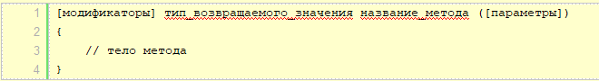
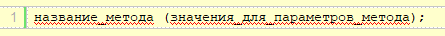
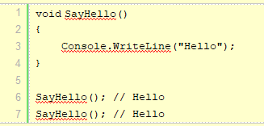
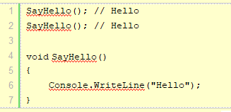
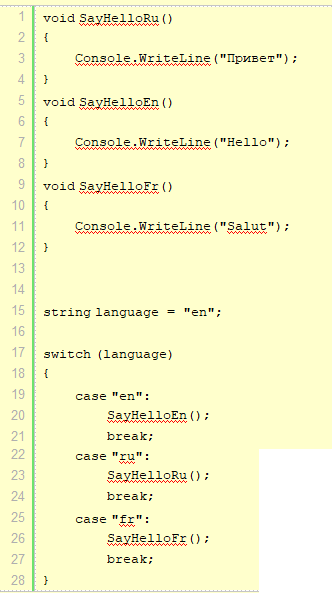

Процедуры и функции. Отличия
Функция отличается от процедуры двумя особенностями:
- всегда вычисляет некоторое значение, возвращаемое в качестве результата функции;
- вызывается в выражениях.
Процедура C# имеет свои особенности:
- возвращает формальный результат void, указывающий на отсутствие результата, возвращаемого при вызове процедуры;
- вызов процедуры является оператором языка;
- имеет входные и выходные аргументы, причем выходных аргументов – ее результатов – может быть достаточно много.
Хорошо известно, что одновременное существование в языке процедур и функций в каком-то смысле избыточно. Добавив еще один выходной аргумент любую функцию можно записать в виде процедуры. Справедливо и обратное. Если допускать функции с побочным эффектом, то любую процедуру можно записать в виде функции. В языке С – дедушке C# – так и сделали, оставив только функции. Однако значительно удобнее иметь обе формы реализации метода – процедуры и функции. Обычно метод предпочитают реализовать в виде функции тогда, когда он имеет один выходной аргумент, рассматриваемый как результат вычисления значения функции. Возможность вызова функций в выражениях также влияет на выбор в пользу реализации метода в виде функции. В других случаях метод реализуют в виде процедуры.
Описание методов (процедур и функций). Синтаксис
Синтаксически в описании метода различают две части – описание заголовка и описание тела метода:
- заголовок_метода
- тело_метода
Рассмотрим синтаксис заголовка метода:
[атрибуты][модификаторы]{void| тип_результата_функции} имя_метода([список_формальных_аргументов])Имя метода и список формальных аргументов составляют сигнатуру метода. Заметьте, в сигнатуру не входят имена формальных аргументов, здесь важны типы аргументов. В сигнатуру не входит и тип возвращаемого результата.
Квадратные скобки (метасимволы синтаксической формулы) показывают, что атрибуты и модификаторы могут быть опущены при описании метода. Подробное их рассмотрение будет дано в лекциях, посвященных описанию классов. Сейчас же упомяну только об одном из модификаторов – модификаторе доступа. У него четыре возможных значения, из которых пока рассмотрим только два – public и private. Модификатор public показывает, что метод открыт и доступен для вызова клиентами и потомками класса. Модификатор private говорит, что метод предназначен для внутреннего использования в классе и доступен для вызова только в теле методов самого класса. Заметьте, если модификатор доступа опущен, то по умолчанию предполагается, что он имеет значение private и метод является закрытым для клиентов и потомков класса.
Обязательным при описании заголовка является указание типа результата, имени метода и круглых скобок, наличие которых необходимо и в том случае, если сам список формальных аргументов отсутствует. Формально тип результата метода указывается всегда, но значение void однозначно определяет, что метод реализуется процедурой. Тип результата, отличный от void, указывает на функцию. Вот несколько простейших примеров описания методов:
void A() {…};
int B(){…);
public void C(){…};
Методы A и B являются закрытыми, а метод С – открыт. Методы A и С реализованы процедурами, а метод B – функцией, возвращающей целое значение.
Список формальных аргументов
Как уже отмечалось, список формальных аргументов метода может быть пустым и это довольно типичная ситуация для методов класса. Список может содержать фиксированное число аргументов, разделяемых символом запятой.
Рассмотрим теперь синтаксис объявления одного формального аргумента:
[ref|out|params]тип_аргумента имя_аргументОбязательным является указание типа и имени аргумента. Заметьте, никаких ограничений на тип аргумента не накладывается. Он может быть любым скалярным типом, массивом, классом, структурой, интерфейсом, перечислением, функциональным типом.
Несмотря на фиксированное число формальных аргументов, есть возможность при вызове метода передавать ему произвольное число фактических аргументов. Для реализации этой возможности в списке формальных аргументов необходимо задать ключевое слово params. Оно может появляться в объявлении лишь для последнего аргумента списка, объявляемого как массив произвольного типа. При вызове метода этому формальному аргументу соответствует произвольное число фактических аргументов.
Содержательно, все аргументы метода разделяются на три группы: входные, выходные и обновляемые. Аргументы первой группы передают информацию методу, их значения в теле метода только читаются. Аргументы второй группы представляют собой результаты метода, они получают значения в ходе работы метода. Аргументы третьей группы выполняют обе функции. Их значения используются в ходе вычислений и обновляются в результате работы метода. Выходные аргументы всегда должны сопровождаться ключевым словом out, обновляемые – ref. Что же касается входных аргументов, то, как правило, они задаются без ключевого слова, хотя иногда их полезно объявлять с параметром ref, о чем подробнее скажу чуть позже. Заметьте, если аргумент объявлен как выходной с ключевым словом out, то в теле метода обязательно должен присутствовать оператор присваивания, задающий значение этому аргументу. В противном случае возникает ошибка еще на этапе компиляции.
Если переменные хранят некоторые значения, то методы содержат собой набор инструкций, которые выполняют определенные действия. По сути метод - это именованный блок кода, который выполняет некоторые действия.
Общее определение методов выглядит следующим образом:

Модификаторы и параметры необязательны.
Ранее мы уже использовали как минимум один метод - Console.WriteLine(), который выводит информацию на консоль. Теперь рассмотрим, как мы можем создавать свои методы.
Определение метода
Определим один метод:

Здесь определен метод SayHello,
который выводит некоторое сообщение. К названиям методов
предъявляются в принципе те же требования, что и к названиям
переменных. Однако, как правило, названия методов начинаются с
большой буквы.
Перед названием метода идет возвращаемый тип данных. Здесь это тип void, который указывает, что фактически ничего не возвращает, он просто производит некоторые действия.
После названия метода в скобках идет перечисление параметров. Но в данном случае скобки пустые, что означает, что метод не принимает никаких параметров.
После списка параметров в круглых скобках идет блок кода, который представляет набор выполняемых методом инструкций. В данном случае блок метода SayHello содержит только одну инструкцию, которая выводит строку на консоль:

Но если мы запустим данный проект, то мы не увидим никакой строки, которую должен выводить метод SayHello. Потому что после определения метод еще надо вызвать, чтобы он выполнил свою работу.
Вызов методов
Чтобы использовать метод SayHello, нам надо его вызвать. Для вызова метода указывается его имя, после которого в скобках идут значения для его параметров (если метод принимает параметры).

Например, вызов метода SayHello будет выглядеть следующим образом:

Поскольку метод не принимает никаких параметров, то после названия метода идут пустые скобки.
Объединим определение и вызов метода:


Консольный вывод программы:
Hello Hello
Преимуществом методов является то, что их можно повторно и многократно вызывать в различных частях программы. Например, в примере выше два раза вызывается метод SayHello.
При этом в данном случае нет разницы, сначала определяется метод, а потом вызывается или наоборот. Например, мы могли бы написать и так:

Определим и вызовем еще несколько методов:

Здесь определены три метода SayHelloRu(), SayHelloEn() и SayHelloFr(),
которые также имеют тип void,
не принимают никаких параметров и также выводит некоторую строку
на консоль. Условно говоря, они выводят приветствие на
определенном языке.
В конструкции switch проверяется
значение переменной language,
которая условно хранит код языка, и в зависимости от ее значения
вызывается определенный метод. Так, в данном случае на консоль
будет выведено
Hello
Сокращенная запись методов
Если метод в качестве тела определяет только одну инструкцию, то мы можем сократить определение метода. Например, допустим у нас есть метод:

Мы можем его сократить следующим образом:

То есть после списка параметров ставится оператор =>, после которого идет выполняемая инструкция.
Объявление методов и функций
- Методы позволяют нам инкапсулировать поведение и функциональность в объекты, которые мы создаем в нашем коде.
-
Метод объявляется с использованием сигнатуры.
Сигнатура метода состоит из:
Модификатор доступа — откуда этот метод может быть вызван. Некоторые из них: - private — наиболее ограничительный, допускающий доступ к методу только из содержащего его класса или структуры
- public — доступ из любого фрагмента кода в рамках приложения
- protected — позволяет получить доступ из содержащего класса или из производных классов
- internal — доступ из файлов внутри одной сборки
- static — указывает, что метод является статическим членом класса, а не членом экземпляра конкретного объекта
- Тип возвращаемого значения — используется для указания типа возвращаемого значения. Используйте void, если метод не возвращает значение
- Идентификатор (имя) метода — все методы должны иметь идентификатор (имя), чтобы была возможность вызывать метод в коде. Правила идентификаторов применяются и к именам методов
-
Список аргументов (параметров) —
разделенный запятыми список аргументов, передаваемых в метод
Пример функции (метода):
В примере:
publicмодификатор доступа,
Booleanтип возвращаемого значения,
StartServiceидентификатор (имя),
string serviceNameпараметр (аргумент). - Чтобы вернуть значение из функции, используйте оператор:
-
Если вместо возвращаемого типа у нас присутствует ключевое
слово
void, то это означает, что функция не вернет никакого значения. -
Можно определить функцию в том же классе, что и функцию
Main(), или определить ее в другом классе. - Все методы или функции в си шарп должны быть статическими, что означает, что их можно вызвать без создания класса объекта.
-
Чтобы методы (функции), описываемые в одном классе, сделать
видимыми в другом, они должны быть описаны с помощью
модификатора доступа
public -
Если метод (функция) вызывается в том же классе, модификатор
доступа
publicне требуется.
Вызов метода / функции
В этом примере:
a — ref аргумент
(входно-выходной);
res — out аргумент
(выходной).
Возврат значения из функции / метода
Три подхода для возврата значений в си шарп:
ref (входно-выходной
параметр)out (выходной
параметр)out и ref —
параметры. Out –
выходные, ref –
входно-выходные.
ref-параметры перед вызовом функции обязательно должны
быть инициализированы, иначе – ошибка компилятора. При вызове
функции также указываются ключевые слова out и refюref,
второй — с ref:
out,
чтобы указать, что значения тих параметров будут возвращены. При
вызове также указывается ключевое слово out:
out:
Результат будет:
25 использование out
ref используется
для возврата значений из метода. При использовании ref
модификатор необходимо, чтобы сначала данные аргументы были
инициализированы значениями